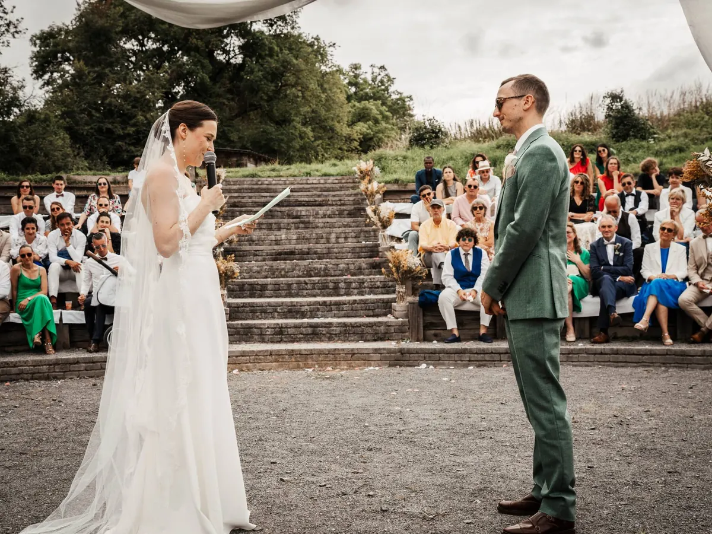

01Cérémonie laïque
Une cérémonie préparée en amont avec vous, vos témoins et votre famille : ordre de passage, discours, entrées musicales et moments symboliques.
- Sonorisation intérieure ou extérieure
- Micros pour l’officiant et les discours
- Musiques des temps forts, éclairage si nécessaire